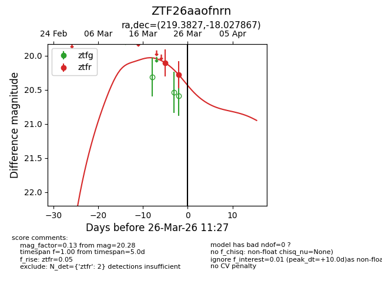
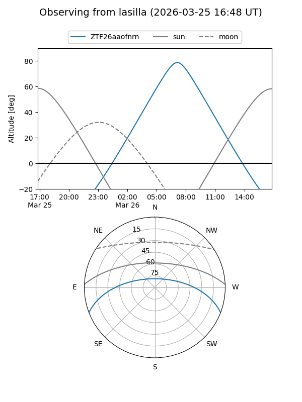
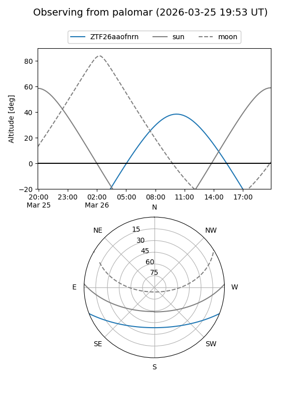
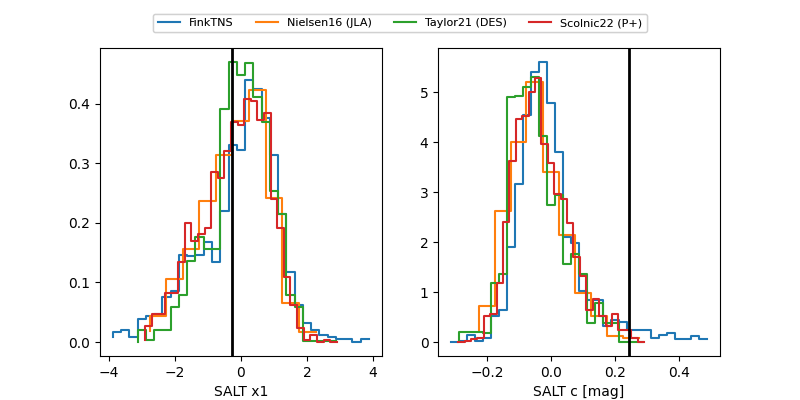

ZTF26aaofnrn
Target ZTF26aaofnrn at 2026-03-26 11:29
Aliases and brokers:
FINK: link
Lasair: link
ALeRCE: link
alt names
ZTF26aaofnrn (ztf,fink_ztf)
Coordinates:
equatorial (ra, dec) = 219.3827,-18.02787
equatorial (HMS+DMS) = 14:37:31.85,-18:01:40.32
galactic (l, b) = (335.5551,+38.03246)
Flags:
Photometry:
last ztfr=20.28
2 ztfr detections
Lightcurve

Visibility


Additional plots
